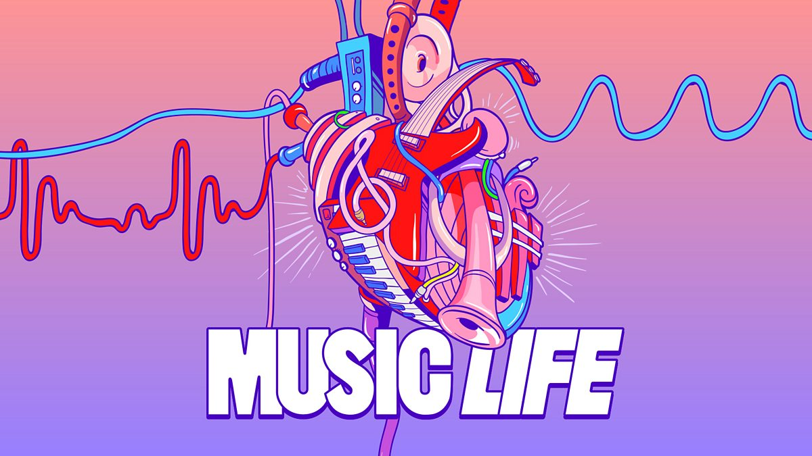

What is Music ?
According to Wikipedia : "Music is the art of arranging sounds in time through the elements of melody, harmony, rhythm, and timbre. It is one of the universal cultural aspects of all human societies."
Everybody loves music, but doesn’t really know about music. Our goal is to show the music depth and how it was created and how it has evolved. We believe this new generation does not know much about music history and we want to show what it really is.
We all hope you will appreciate the discovering of our website, we put a lot of love and time to make that one, it was challenging, some of us may have lost their sanity but in the end it was worth it.